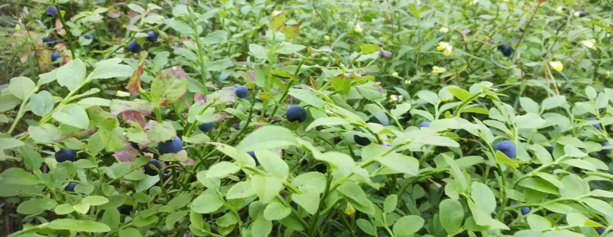

Bilberries in Southern Finland
Work in Progress
In this project, I use Jupyter Notebooks and the Python libraries numpy, pandas, geopandas, matplotlib, and rasterio to predict and map wild bilberry yields in 2020. I rely on open data from Luke - the Natural Resources Institute of Finland - and the Finnish Meteorological Institute to identify and rank sites for harvesting the berries.
The factors I consider are site fertility, stand age, stand diameter, and spruce volume.